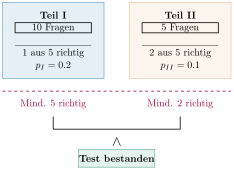

Aufgabe 7.7
Ein Multiple-Choice-Test besteht aus zwei Teilen I und II. Teil I enthält 10 Fragen mit je 5 möglichen Antworten, von denen genau eine richtig ist. Teil II umfasst 5 Fragen mit ebenfalls je 5 möglichen Antworten, von denen aber jeweils genau zwei richtig sind. Der Test gilt als bestanden, wenn mindestens 5 Fragen aus Teil I und mindestens 2 Fragen aus Teil II zutreffend beantwortet sind, wobei in II im Falle einer richtigen Lösung jeweils beide zutreffenden Antworten anzukreuzen sind. Mit welcher Wahrscheinlichkeit besteht ein «Glücksritter» diesen Test?
- Berechnen Sie für Teil II die Wahrscheinlichkeit, beide richtigen Antworten zufällig zu treffen
- Modellieren Sie Teil I und II separat mit Binomialverteilungen
- Die Gesamtwahrscheinlichkeit ist das Produkt der Einzelwahrscheinlichkeiten (Unabhängigkeit)
- Nutzen Sie die Komplementärwahrscheinlichkeit für «mindestens k Treffer»
| Gegeben | Gesucht |
| Teil I: 10 Fragen, je 5 Antworten, 1 richtig | $P(\text{Test bestanden durch Raten})$ |
| Teil II: 5 Fragen, je 5 Antworten, 2 richtig | |
| Bestehen: mind. 5 in I UND mind. 2 in II | |
| Teil I: $X \sim B(10, 0.2)$ | $P(X \geq 5) \cdot P(Y \geq 2)$ |
| Teil II: $Y \sim B(5, 0.1)$ |
Teststruktur-Diagramm:

Analyse der Teststruktur:
Teil I:
- Ratewahrscheinlichkeit: $p_I = \frac{1}{5} = 0.2$
- Bestehensgrenze: mindestens 5 richtige Antworten
- Modellierung: $X \sim B(10, 0.2)$
Teil II:
- Anzahl Möglichkeiten, 2 aus 5 zu wählen: $\binom{5}{2} = 10$
- Ratewahrscheinlichkeit: $p_{II} = \frac{1}{10} = 0.1$
- Bestehensgrenze: mindestens 2 richtige Antworten
- Modellierung: $Y \sim B(5, 0.1)$
Berechnung für Teil I:
Einzelwahrscheinlichkeiten:
| $k$ | $P(X=k)$ | Kumuliert $P(X \leq k)$ |
| 0 | 0.1074 | 0.1074 |
| 1 | 0.2684 | 0.3758 |
| 2 | 0.3020 | 0.6778 |
| 3 | 0.2013 | 0.8791 |
| 4 | 0.0881 | 0.9672 |
$$P(X \geq 5) = 1 - 0.9672 = 0.0328 = 3.28\%$$
Berechnung für Teil II:
Gesamtwahrscheinlichkeit:
Da die beiden Testteile unabhängig sind:
Übersicht verschiedener Ratestrategien:
| Strategie | Teil I | Teil II | Gesamt |
| Reines Raten | 3.28% | 8.14% | 0.27% |
| Nur Teil I vorbereitet | 100% | 8.14% | 8.14% |
| Nur Teil II vorbereitet | 3.28% | 100% | 3.28% |